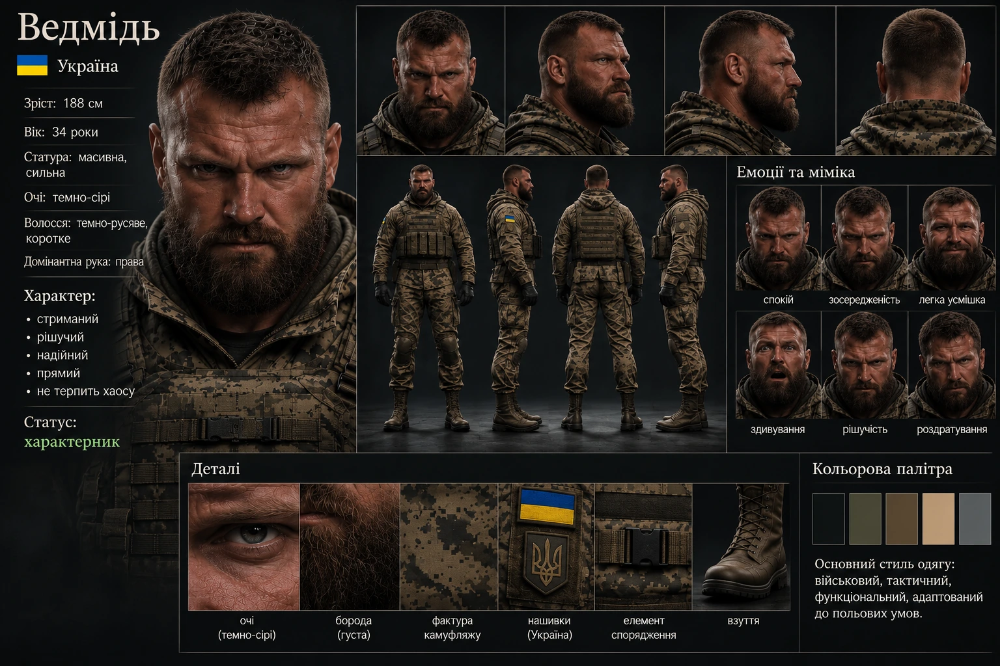

ОСНОВНА ІНФОРМАЦІЯ
Піхотинець із фронтовим досвідом
Ведмідь — український військовий піхотинець, який воює від самого початку війни. У фронтовому епізоді він діє разом із Феніксом та іншими бійцями під час небезпечного виходу в сіру зону.
Ім’я / позивний: Ведмідь
Країна: Україна
Служба: піхота
Статус: характерник (за наданим візуальним досьє)
Вік: 34 роки (за наданим візуальним досьє)
Зріст: 188 см (за наданим візуальним досьє)
Статура: масивна, сильна (за наданим візуальним досьє)
Очі: темно-сірі (за наданим візуальним досьє)
Волосся: темно-русяве, коротке; густа борода (за зображенням)
Домінантна рука: права (за наданим візуальним досьє)
ХАРАКТЕР І ПОВЕДІНКА
Стриманий, рішучий і надійний
У наданому візуальному досьє Ведмідь описаний як стриманий, рішучий, надійний і прямий; він не терпить хаосу. У рукописному епізоді його показано як досвідченого піхотинця, який швидко реагує на бойову обстановку та виконує накази.
Під час виходу в сіру зону Ведмідь зустрічає підсилення, готує спорядження й обходить позицію за наказом Фенікса. Після загибелі Ігоря він на мить завмирає від шоку, але продовжує рух разом із групою.
РОЛЬ У СЮЖЕТІ
Фронтова місія разом із Феніксом
Ведмідь бере участь у виході до покинутої забудови, де закріпився ворожий підрозділ. Під час операції група стикається з незвичними здібностями новоприбулих характерників і знищує виявлені ворожі позиції.
Коли ворожий дрон атакує групу, Ведмідь разом із Феніксом і полоненим проходить через портал до орбітальної бази. Там він стає свідком технологій і можливостей, які докорінно змінюють його уявлення про світ.
ВАЖЛИВІ ПОДІЇ ТА ВЗАЄМИНИ
Побратими та новий світ
- Досвідчений піхотинець; у рукописі сказано, що він воював від початку війни.
- Працює в одній групі з Феніксом і виконує його накази під час виходу в сіру зону.
- Стає свідком загибелі Ігоря під час атаки ворожого дрона.
- Разом із Феніксом переходить через портал на орбітальну базу.
- На базі бачить медичну капсулу, у якій мають відновити Ігоря.
Що не встановлено рукописами
Особисте ім’я, дата народження, родина, освіта та докладна передісторія Ведмедя в опрацьованому епізоді не названі. Вік, зріст, зовнішні характеристики й домінантна рука взяті лише з наданого користувачем візуального досьє.